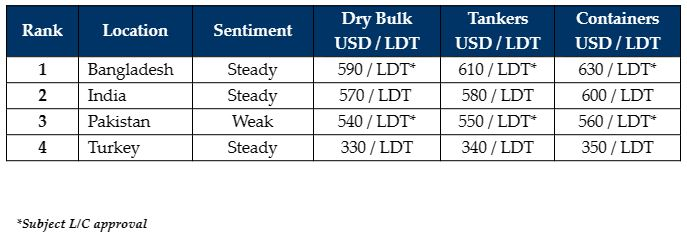

inWeekly Demolition Reports24/04/2023

The results of this most recent market decline have been on full display this week as those vessels previously soldat higher prices are now struggling to deliver in a U.S. Dollar starved Bangladesh (and Pakistan) and End Buyers are starting to (expectedly) create unnecessary turbulence at the waterfront, especially on those high-priced incoming units.
Steel plate prices continue to dither across all markets (including Turkey) over the past month or so, leaving the various recycling destinations far more precariously poised than they were during the bullish start of the year.
The key hurdle for Bangladeshi Recyclers (amidst the ongoing liquidity crunch in the country) is working with the Central Bank in getting fresh L/Cs approved, with all but essential items (food, fuel, and fertilizers) receiving approvals instead. As such, several of the higher priced deals that had been concluded into Bangladesh over the past few months, are only now starting to deliver after delays on arrival, as the industry overall is starting to witness how increasingly difficult it might just be to obtain L/C approvals on upcoming deliveries.
As such, it is highly recommended for Owners with any incoming vessels into Bangladesh, to either re-position their units towards competing markets (i.e., India at lower levels but a far more assured performance) or to ensure that a minimum of five days between arrival, tendering NOR, and payment release is provided by End Buyers to ensure they can open L/Cs, have funds arranged for, and then have their end of the transaction wrapped up in time for beaching.
Meanwhile, Pakistan remains in a rut, invisible to the Ship Recycling Community, whilst Turkey continues to sail through week after week, with nearly the same result.
These are certainly not the markets of old we are operating in any longer, and some more time & patience will be required moving forward, in delivering the larger LDT vessels. The end of the Holy month of Ramadan from next week should also bring some greater clarity and desire / demand to buy.
For week 16 of 2023, GMS demo rankings / pricing for the week are as below.

📄 Download PDF: Ship-recycling-market-insight-week-16-2023-Time-Needed.pdfSource: GMS,Inc. ,https://www.gmsinc.net/gms_new/index.php/web